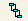

Defining Group-Level Sender/Receiver Pair Associations
You define group-level sender/receiver pair associations to associate sender/receiver pairs at the group level with a specific interchange-level sender/receiver pair. For example, group-level sender A and receiver B are associated with interchange-level sender X and receiver Y.
Group sender | Group receiver | Interchange sender | Interchange receiver |
A | B | X | Y |
When you define group-level sender/receiver pair associations, you must define all the group-level sender/receiver pairs that are associated with a single interchange-level sender/receiver pair. A group-level sender/receiver pair can be associated with only one Interchange-level sender/receiver pair.
Group sender | Group receiver | Interchange sender | Interchange receiver |
A | B | X | Y |
C | B |
D | B |
A | C |
D | E | X | Z |
D | F |
These associations are for use by services that you create to form outbound EDI documents. Because you are using non-standard processing, your service will have the group-level senders and receivers. However, to create an interchange header for the outbound EDI document, your service requires the interchange-level sender/receiver pair. To make a correlation between group-level sender/receiver to interchange-level sender/receiver, your service uses the group-level sender/receiver pair associations that you define. For example, if your service has group-level sender A and receiver B, using the group-level sender/receiver pair associations, the service can determine that the associated interchange-level sender/receiver pair is interchange-level sender X and receiver Y.
After your service retrieves the interchange-level sender/receiver pair information, your service can create the interchange headers by using the information you defined for the interchange sender/receiver pair.
Module for EDI saves the group-level sender/pair associations in the EDIGroup table, which is a
Module for EDI-specific table in the
Trading Networks database. The EDIGroup table works together with the EDIEnvelope table, which contains the interchange-level sender/receiver pair information that is described in
Defining Interchange-Level Sender/Receiver
Pair Information. The following graphic illustrates how the EDIEnvelope and EDIGroup tables work together.
Use the following procedure to associate group-level sender/receiver pairs with a specific interchange-level sender/receiver pair. You must define the information for the interchange-level sender/receiver pair before you can associate group-level sender/receiver pairs with it. For instructions for defining interchange-level sender/receiver pairs, see
Defining Interchange-Level Sender/Receiver
Pair Information.

To define Group-level sender/receiver pair associations
1. Open Integration Server Administrator if it is not already open.
2. In the Solutions menu of the navigation panel, click EDI. Integration Server Administrator opens a new browser window to display the Module for EDI home page.
3. From the Module for EDI home page, in the Partner Set Up menu of the navigation panel, click Manage Interchange Info.
4. To search for the interchange-level sender/receiver pair with which you want to associate group-level sender/receiver pairs, specify one or more of these criteria:
For this field... | Specify... |
Sender ID | The sender ID of the interchange-level sender/receiver pairs that you want to display. |
Sender Qualifier | The EDI ID qualifier of the sender of the interchange-level sender/receiver pairs that you want to display. |
Receiver ID | The receiver ID of the interchange-level sender/receiver pairs that you want to display. |
Receiver Qualifier | The EDI ID qualifier of the receiver of the interchange-level sender/receiver pairs that you want to display. |
Production Mode | The production mode specified in the information for the interchange-level sender/receiver pairs that you want to display. |
Sort By | How you want Module for EDI to sort the returned list of interchange-level sender/receiver pairs. |
Maximum Results | The maximum number of matching interchange-level sender/receiver pairs you want Module for EDI to return. |
5. Click Search. Module for EDI displays the list of interchange-level sender/receiver pairs that match your criteria at the bottom of the screen.
6. In the row for the interchange-level sender/receiver pair to which you want to associate group-level sender/receiver pairs, click  in the GS column. Module for EDI displays the Cross Reference > GS Pairs screen that lists the interchange-level sender/receiver pair and any existing group-level sender/receiver pairs.
7. For each group-level sender/receiver pair that you want to associate with the interchange-level sender/receiver pair, perform the following:
a. Click Add GS Pair. Module for EDI displays the Add GS Pairs screen.
b. Specify the following about the group-level sender/receiver pair:
For this field... | Specify... |
Sender ID | The sender ID for the group-level sender. |
Sender Qualifier | The EDI ID qualifier for the group-level sender. |
Receiver ID | The receiver ID for the group-level receiver. |
Receiver Qualifier | The EDI ID qualifier for the group-level receiver. |
c. Click the Save Changes button.